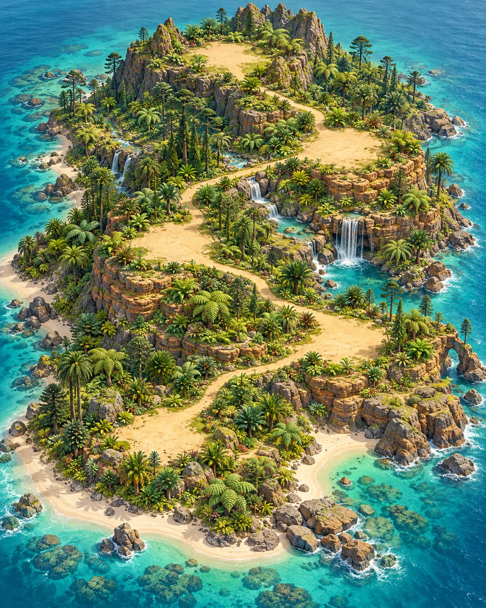
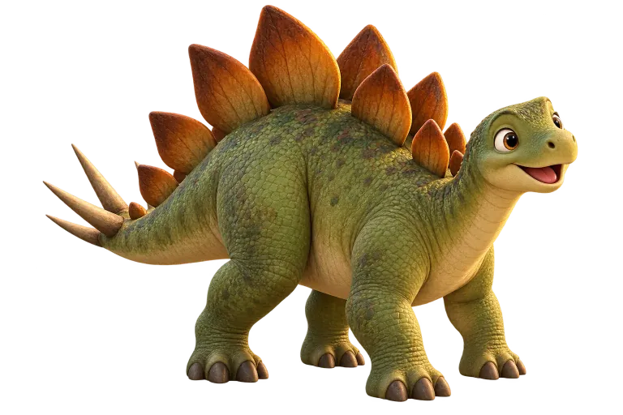
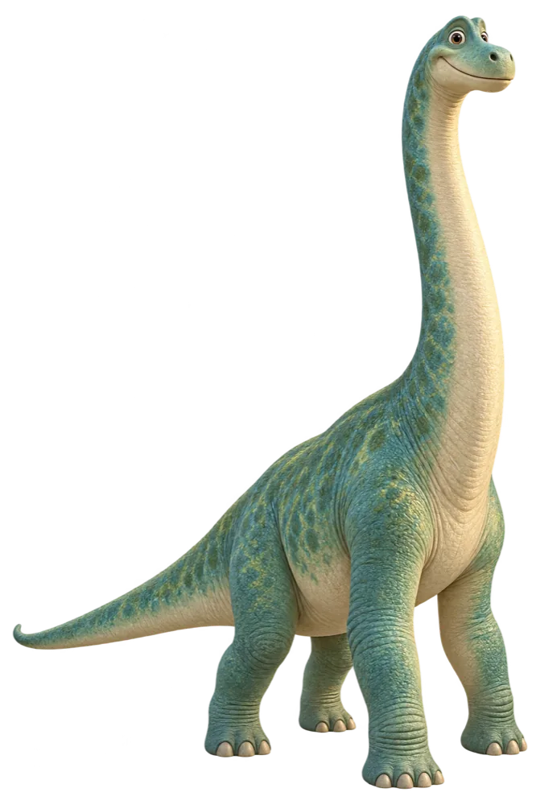

恐龙拼拼岛
穿越时光的小探险
← 返回数学游戏
森林挑战 · 6关
家长
侏罗纪 · 森林篇
巨兽森林
0
/ 6 关


蕨叶入口
可参观
苏铁渡口
可参观
你在这里

3
巨杉营地
开始探险 →
你在这里
瀑布岩台
完成营地解锁
山顶瞭望台
森林篇终点
⛏
有一枚化石等你挖
⛏
有一枚化石等你挖
★
已完成
●
当前
未解锁
今日探险
3 关 · 约 10–15 分钟
去巨杉营地，看看腕龙
接来一样多的伙伴，发现乘法的秘密。
1
2
3
看看今天的路线
先动手，再想一想，最后选答案。
×